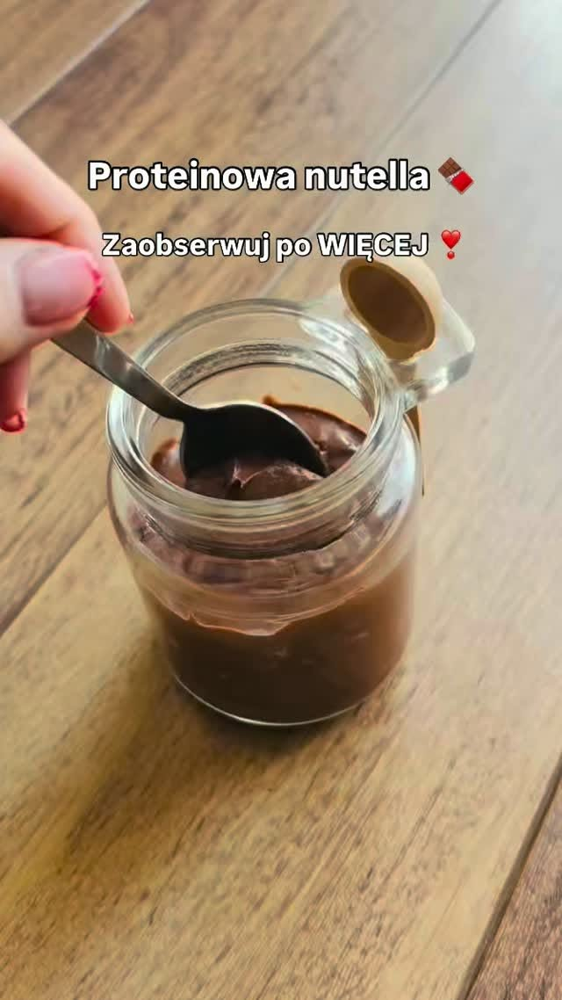

Kremowy makaron z łososiem
Makaron z łososiem, pomidorkami koktajlowymi, szpinakiem i czosnkiem — pomysł Karoliny na prosty posiłek.
Obejrzyj na FacebookuProste przepisy, codzienne inspiracje i wiadomości z poradni. Bądź na bieżąco z tym, czym dzieli się Karolina.
Pomysły na posiłki i spojrzenie na codzienne nawyki — prosto z profilu Fit Kaloria.
Przepisy i chwile z codzienności Karoliny.
Makaron z łososiem, pomidorkami koktajlowymi, szpinakiem i czosnkiem — pomysł Karoliny na prosty posiłek.
Obejrzyj na FacebookuKokosowo-czekoladowa inspiracja: domowe batoniki z twarogiem w stylu Bounty.
Pełny wpis na FacebookuJeśli odtwarzacz się nie wczytuje, obejrzyj film na Facebooku .
Miękkie, pachnące cynamonem wypieki — propozycja słodkiego dodatku do kawy.
Pełny wpis na FacebookuJeśli odtwarzacz się nie wczytuje, obejrzyj film na Facebooku .

Pomysł na proteinowy krem czekoladowy do pieczywa, naleśników lub owsianki.
Pełny wpis na FacebookuJeśli odtwarzacz się nie wczytuje, obejrzyj film na Facebooku .
Cztery dni odpoczynku wśród przyrody i koni. Karolina dzieli się wspomnieniami z wyjazdu.
Obejrzyj na FacebookuWybrane wpisy · aktualizacja 9 listopada 2026. Najnowsze publikacje znajdziesz na profilu poradni.
Zobacz profil na Facebooku